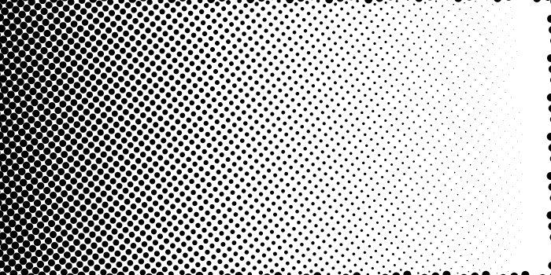
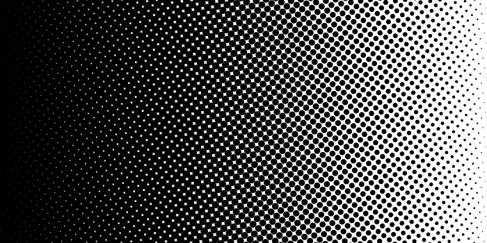

Release integration and fresh 483-test / built-preview validation. The image comparisons below preserve the measured quality investigation; they do not establish universal model accuracy.
Original → current validated General/Portrait → author-published BiRefNet Lite 512 FP32 candidate. Current outputs use real browser inference; candidate comparisons use ONNX Runtime CPU. The same pinned candidate also completes browser WebGPU and optional loopback-helper UI inference. No reference masks or invented accuracy scores are used.
Detail visibly improves portrait halos and some object edges, while losing translucent artwork and some fine strands. These seven fixtures establish specific improvements and failures, not broad matting accuracy or production readiness. Photographic flyaway hair remains underrepresented.
Broad light halo is visibly reduced; collar edges still carry some light colour contamination. Small hair strands are not established as ground-truth-correct.
Detail retains more neck foreground. Fur boundaries are cleaner in places, but whisker preservation is mixed: some strands remain and some disappear. No universal fine-hair improvement is claimed.
The fresh full-resolution General result already clears most of the hole. Detail makes the rim cleaner and preserves some thin structure better; the larger missed-hole claim from the older downsampled example is not reproduced here.
The image-only contrast reduction is disclosed in provenance. Detail better preserves the helmet highlight and reduces the broad edge haze; this derivative is not a new independent photograph.
Source pixels were blended with a shifted copy and lightly blurred to create a disclosed soft-motion fixture. The model mask itself was not blurred to conceal errors. Boundary haze is reduced, but true moving hair remains unvalidated.
Synthetic geometry tests thin structures; it does not replace a photographic flyaway-hair dataset. Inspect lost strands and background remnants at native size.
Detail removes much of this translucent artwork and is worse than General. Keep the source alpha with the new explicit “Keep source transparency (skip AI)” action. This failure is why Detail is opt-in rather than the default.
Implementation, timings and limitations · Exact fixture provenance · CPU samples · WebGPU samples · Workflow checks
Retained historical point-sampling versus calibrated area-coverage ramp. Follow-up browser checks additionally rasterize PNG and SVG independently across three engines; see workflows.json.

